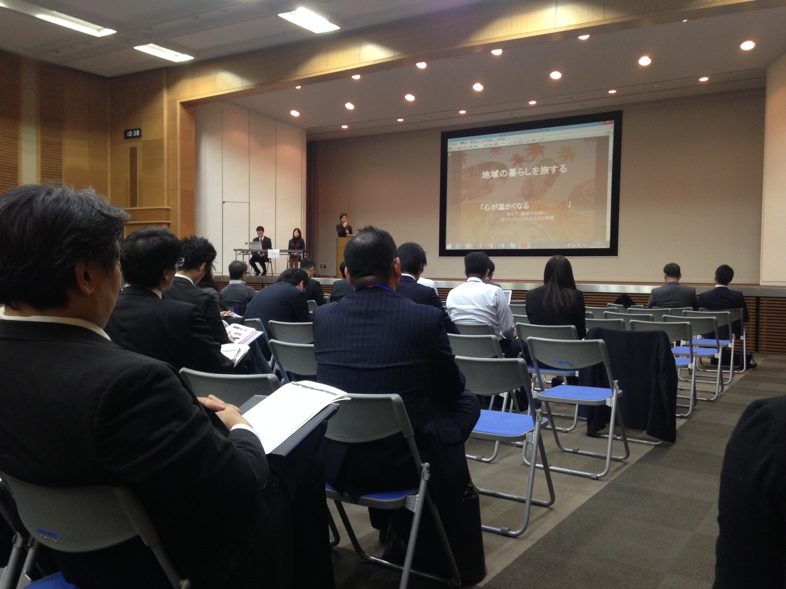

本日なんですが、経産省のプロジェクトのマッチングイベントに参加してきました。そもそもの目的は２か月ほど前に半ば個人的趣味で作ったJAPANPICという訪日外国人向けアプリのマーケティングに役立つことはないか模索をしようというところだったのですが、経産省傘下になってしまうとやはり受託事業になってしまうので、何となく自分のイメージしている事業と遠いかなあと改めて思ってしまいました。なのでJAPANPICの方は何か違う方法を考えていくことにしました。
今日はそれよりも、午前中５−６社の方のプレゼンテーションを聞いていて思うところあり、うまいプレゼンとは何か、そしてそのために何を準備すべきか、どういうところに気をつければいいかという点について三点ほど述べたいと思います。
・[プレゼン前に]１０回以上練習する。（目安は５０回程度）
：発表を見させて頂いた全ての事業者の方が、制限時間をオーバーしており、プレゼンが尻切れとんぼで終わっていました。中には、「これからが今日の話のミソなんですが、この後、後ろで歩いている時に声をかけて聞いてください」と悪びれも無く仰る方もいて、素直に「これはヤバい。。。」と思ってしまいました。J⚪️Bのお偉いさんのようでしたが、この方にもれず自分自身気をつけなければなりません。制限時間内に終わるように練習しなければなりませんし、必要に応じて投影する資料を削除・修正しなければならないでしょう。
・[プレゼン前に]会場の設備（キャパ・備品）について確認する。
：これもほぼ全ての事業者の方に当てはまったのですが、文字が小さすぎてほとんど見えませんでした。座っている席次第で聴衆の理解度が変動するというのはまずいと思います。もっとも席が遠い方を基準に、投影する資料の文字のフォントを調整する必要があります。色とかデザインはそこまで細部にこだわる必要はないと思いますが、文字の大きさは要注意です。こちらも必要に応じて資料を修正しましょう。また、これは今日の発表会と特に関係はありませんが、事前にマイク利用の可否やスライドのページ操作のためのリモコン利用の可否などは聞いておきましょう。これによって当日の声の張り具合が変わってきますし、練習内容も変わってきます。私がプレゼン不慣れな時はとにかく声が大きすぎて見ていていたたまれなかったと言う悲しい批判を受けたこともあります。皆さんはそんなことのないように、適度な大きさの声でプレゼンしてください。
・[プレゼン中に]何を伝えたいのか、メッセージを一つに絞る。
：今日のプレゼンを聞いていて、特に強く感じたのがこのメッセージ性の重要度です。一番重要かもしれません。要するに、通り一辺倒の説明をされて、「で、結局何がこの人言いたいんだろう？？」と毎回頭の中を疑問符が駆け巡ることになりました。これは最後が尻切れとんぼになってしまうと仕方のないことなのかもしれませんが、とにかく「聴衆の方にこれだけは伝えたい！覚えて帰ってほしい！」ことを繰り返し、特に最初と最後に触れましょう。Steve Jobsはスタンフォードの学生に「Stay hungry, Stay foolish.」と言いましたね。若い頃に大学を中退した時代の寵児が、一流大学卒のエリートアホボンボン学生に「お前らもっとハングリーになれ、アホになれ！」と言いたかったということです。インパクト強すぎです。ここまでインパクト強くなくていいと思うのですが、一言で「カクカクシカジカ、シカジカカクカク！」と言ってプレゼン中にまとめるようにしましょう。
以上、プレゼンの極意についてまとめてみました。是非参考にしてみてください！